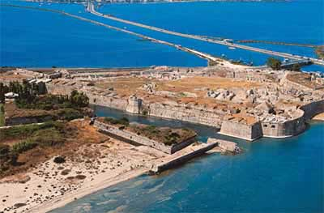

|
Το Κάστρο της Αγίας Μαύρας δεσπόζει στην είσοδο της Λευκάδας από τα τέλη του 13ου αι., σιωπηλός φρουρός και μάρτυρας άλλων εποχών, όταν έκοβε το δρόμο σε εχθρούς και πειρατές.
Χτίστηκε από τον Φράγκο ηγεμόνα Ιωάννη Ορσίνι, όταν του παραχωρήθηκε το νησί ως προίκα στο γάμο του με την κόρη του δεσπότη της Ηπείρου Νικηφόρου Αγγέλου. Το 1479, όταν η Λευκάδα καταλήφθηκε από τους Τούρκους και η Αγία Μαύρα έγινε τζαμί, μια μεγάλη τοξωτή γέφυρα με 360 καμάρες διέσχιζε τη λιμνοθάλασσα που τη χωρίζει από την ηπειρωτική Ελλάδα και στήριζε τους σωλήνες του τουρκικού υδραγωγείου που έφερνε νερό στο κάστρο. Στην προσπάθειά του να καταλάβει το κάστρο ο Αλή-Πασάς έχτισε στην απέναντι ακτή μικρό φρούριο, το γνωστό Τεκέ ή Κάστρο του Γρίβα.
|
|